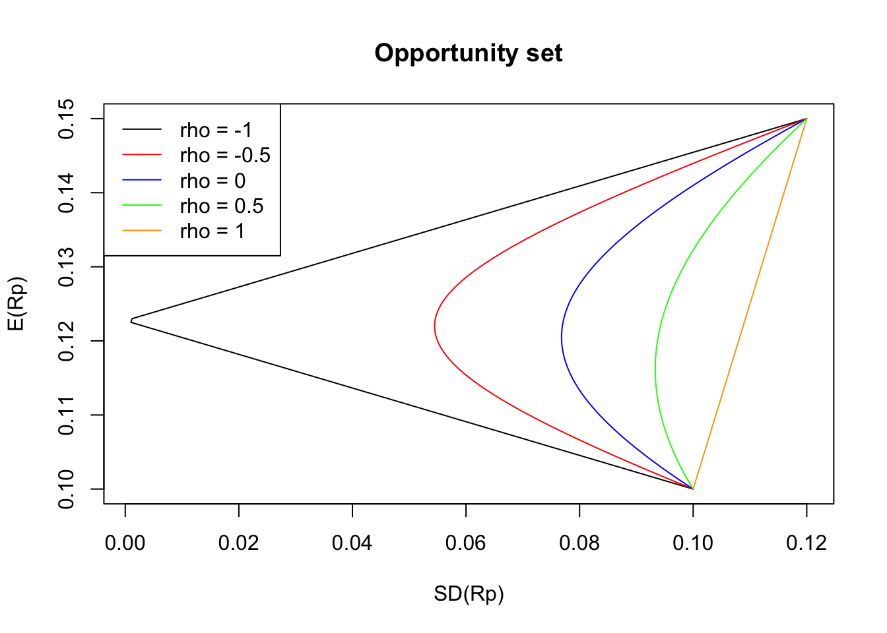

3 R for Finance
3.1 Market portfolio and CAPM
Let us imagine that we have available a certain amount of money and want to invest it by buying different stocks available in the market. A combination of stocks that we can buy is what is called a portfolio. The main problem that we want to address here is determining the portfolio, or equivalently, the ratio of stocks that we should buy. Ideally, we would like to pick a portfolio that will return a high profit with low risk. Modern portfolio theory gives us some solutions to this problem. The main idea of modern portfolio theory is to assume that the price movements (or returns) of stocks (or risky assets) are random variables. Then, we can define the risk of a particular stock, as how much the individual return of that stock deviates from its mean return. This is usually quantified by the standard deviation, which is often called volatility in finance. Typically, a stock that might give high returns have high volatility, and stocks with low volatility often make low returns. Hence, the important problem is calculating the portfolio that generates a higher profit with less volatility than individual stocks.
3.1.1 Mean-variance portfolio
We start this section by giving a simple example. Consider two stocks A and B with corresponding returns \(R_A\) and \(R_B\) following the joint probability mass function below:
| State | \(R_{A}\) | \(R_{B}\) | Probability |
|---|---|---|---|
| Depression | \(-20\%\) | \(5\%\) | 0.25 |
| Recession | \(10\%\) | \(20\%\) | 0.25 |
| Normal | \(30\%\) | \(-12\%\) | 0.25 |
| Boom | \(50\%\) | \(9\%\) | 0.25 |
Now, suppose that we want to construct a portfolio with a weight \(w_A\) on stock A and \(w_B\) on stock B, with \(w_A + w_B = 1\). Then, the return of the portfolio is \[ R_p =w_A R_A +w_B R_B \,, \] which is also a random variable. Then, the expected value and variance of \(R\) are given by \[ \mathbb{E}[R_p] = w_A \mathbb{E}[R_A]+w_B \mathbb{E}[R_B] \,, \] and \[ Var(R_p) = w_A^2 Var(R_A) + w_B^2 Var(R_B) + 2 w_A w_B Cov(R_A, R_B) \,, \] respectively. Consider now \(w_A = 0.6\), then we can compute expected value and variance of the portfolio as follows. First, we compute the expected value and variance of A and B, and the covariance of A and B:
rA <- c(-0.2, 0.1, 0.3, 0.5)
rB <- c(0.05, 0.2, -0.12, 0.09)
prob <- rep(0.25, 4)
expA <- sum(rA * prob)
expA## [1] 0.175expB <- sum(rB * prob)
expB## [1] 0.055varA <- sum(rA^2 * prob) - expA^2
varA## [1] 0.066875varB <- sum(rB^2 * prob) - expB^2
varB## [1] 0.013225covAB <- sum(rA * rB * prob) - expA * expB
covAB## [1] -0.004875With the above quantities above at hand, we can now compute the expected return and variance of our portfolio:
w <- c(0.6, 0.4)
exp_por <- sum(w * c(expA, expB))
exp_por## [1] 0.127var_por <- varA * w[1]^2 + varB * w[2]^2 + 2 * covAB * w[1] * w[2]
var_por## [1] 0.023851Moreover, the standard deviation is given by
sqrt(var_por)## [1] 0.1544377On the other hand, note that the weighted average of the standard deviations of \(R_A\) and \(R_B\) is
w[1] * sqrt(varA) + w[2] * sqrt(varB)## [1] 0.2011612which is greater than the standard deviation of the portfolio. This is known as the diversification effect.
Diversification Effect: The standard deviation of the portfolio is less than or equal to the weighted average of the standard deviations of the individual securities. Equality holds only if the correlation of the assets is 1.
So far, we have treated \(w_A\) and \(w_B\) as fixed constants. However, if \(w_A\) and \(w_B\) change in a way such that \(w_A + w_B = 1\), then \(\mathbb{E}[R_p]\) and \(SD(R_p)\) also change. This leads to the following definition of opportunity set.
Definition 3.1 (Opportunity set) The possible pairs of \(\mathbb{E}[R_p]\) and \(SD(R_p)\) that can be formed by varying \(w_A\) (and hence \(w_B\)) is called the opportunity set or feasible set.
Remark. Note that in the definition above, we allow \(w_A < 0\) (this means we can borrow A) and \(w_A > 1\) (this means \(w_B\) can be negative, and hence we can borrow B). However, it is common practice to restrict \(w_A\) to \([0, 1]\).
We now want to picture the shape of the opportunity set for stocks A and B. For computational purposes, it is convenient to write the expressions of \(\mathbb{E}[R_p]\) and \(Var(R_p)\) in terms of matrices operations (remember, R is quite efficient doing these types of operations). Thus, we first need to introduce further notation. Let \(\mathbf{R} = (R_A, R_B)\) and \(\mathbf{w} = (w_A, w_B)\), then \[ \mathbb{E}[R_p] = \mathbb{E}[\mathbf{R}] \mathbf{w}^{\top} \,, \] and \[ Var(R_p) =\mathbf{w} Var(\mathbf{R}) \mathbf{w}^{\top} \,, \] where \(\mathbb{E}[\mathbf{R}]\) is the mean vector of \(\mathbf{R}\), i.e., \(\mathbb{E}[\mathbf{R}] = (\mathbb{E}[R_A], \mathbb{E}[R_B])\), and \(Var(\mathbf{R})\) is the covariance matrix of \(\mathbf{R}\), that is, \[ Var(\mathbf{R}) = \left( \begin{matrix} Var(R_A) & Cov(R_A, R_B) \\ Cov(R_A, R_B) & Var(R_B) \end{matrix}\right) \,. \] The following code plots the opportunity set for the stocks A and B described in Table 3.1.
wa <- seq(0, 1, by = 0.01)
w <- cbind(wa, 1 - wa)
exp_p <- w %*% c(expA, expB)
sigma <- matrix(c(varA, covAB, covAB, varB), ncol = 2)
sd_portfolio <- function(sigma, w) {
sg <- rep(0, nrow(w))
for (i in 1:nrow(w)) {
sg[i] <- sqrt(t(w[i, ]) %*% sigma %*% (w[i, ]))
}
sg
}
sd_p <- sd_portfolio(sigma, w)
plot(sd_p, exp_p,
type = "l",
main = "Opportunity set",
xlab = "SD(Rp)",
ylab = "E(Rp)"
)
In the picture above, we can observe that there is a point on the opportunity set such that \(SD(R_p)\) is a minimum. This point corresponds to a portfolio that can be formed from mixing the assets and is known as the minimum variance portfolio (MV). In R, we can find the weights of such a portfolio as follows:
wmin <- w[match(min(sd_p), sd_p), ]
wmin## wa
## 0.2 0.8The corresponding expected return and standard deviation of the minimum variance portfolio are then
exp_mv <- wmin %*% c(expA, expB)
exp_mv## [,1]
## [1,] 0.079sd_mv <- sd_portfolio(sigma, matrix(wmin, 1))
sd_mv## [1] 0.09787237Suppose now that we want to create a portfolio by mixing assets such that the standard deviation of the resulting portfolio is greater than the minimum standard deviation that can be achieved. For instance, the figure below shows that we have two options to pick a portfolio with a standard deviation of \(0.11\).

Among these two portfolios, for sure, we would like to pick the one with higher \(\mathbb{E}(R_p)\), meaning the portfolio above the point MV. More generally, we can conclude that the part of the opportunity set below the point MV would never be selected. The opportunity set above the point MV is called the efficient frontier. The following plot shows the MV point and the efficient frontier for our example.
# Efficient frontier
exp_ef <- exp_p[exp_p > as.vector(exp_mv)]
sd_ef <- sd_p[exp_p > as.vector(exp_mv)]
plot(sd_p, exp_p,
type = "l",
main = "Opportunity set",
xlab = "SD(Rp)",
ylab = "E(Rp)"
)
points(sd_mv, exp_mv, col = "red", pch = 19) # MV
lines(sd_ef, exp_ef, col = "blue", lwd = 2) # Efficient frontierNext, we want to illustrate how the shape of the opportunity changes according to the correlation of the risky assets. For that purpose, let us consider two stocks A and B with the following characteristic: \(\mathbb{E}[R_A] = 10\%\), \(\mathbb{E}[R_B] = 15\%\), \(SD(R_A) = 10\%\), and \(SD(R_B) = 12\%\). We also assume five different possibilities for the correlation between A and B: -1, -0.5, 0, 0.5, and 1.
wa <- seq(0, 1, by = 0.01)
w <- cbind(wa, 1 - wa)
exp_p <- w %*% c(0.1, 0.15)
sd_A <- 0.1
sd_B <- 0.12
sigma1 <- matrix(c(sd_A^2, -1 * sd_A * sd_B, -1 * sd_A * sd_B, sd_B^2), 2)
sigma2 <- matrix(c(sd_A^2, -0.5 * sd_A * sd_B, -0.5 * sd_A * sd_B, sd_B^2), 2)
sigma3 <- matrix(c(sd_A^2, 0 * sd_A * sd_B, 0 * sd_A * sd_B, sd_B^2), 2)
sigma4 <- matrix(c(sd_A^2, 0.5 * sd_A * sd_B, 0.5 * sd_A * sd_B, sd_B^2), 2)
sigma5 <- matrix(c(sd_A^2, 1 * sd_A * sd_B, 1 * sd_A * sd_B, sd_B^2), 2)
sd_p1 <- sd_portfolio(sigma1, w)
sd_p2 <- sd_portfolio(sigma2, w)
sd_p3 <- sd_portfolio(sigma3, w)
sd_p4 <- sd_portfolio(sigma4, w)
sd_p5 <- sd_portfolio(sigma5, w)
plot(sd_p1, exp_p,
type = "l",
main = "Opportunity set",
xlab = "SD(Rp)",
ylab = "E(Rp)"
)
lines(sd_p2, exp_p, col = "red")
lines(sd_p3, exp_p, col = "blue")
lines(sd_p4, exp_p, col = "green")
lines(sd_p5, exp_p, col = "orange")
legend("topleft",
leg = paste("rho =", c(-1, -0.5, 0, 0.5, 1)),
lty = 1,
col = c("black", "red", "blue", "green", "orange")
)
The straight line (orange) corresponds to \(\rho = 1\), representing points that would have been generated if the two assets were perfectly positively correlated. When \(\rho \neq 1\), we see that the resulting opportunity set is always to the left of the straight line and hence the standard deviation of these portfolios is less than the ones of the case when \(\rho = 1\) for the same values of \(\mathbb{E}[R_p]\). This illustrates the diversification effect. Since the curve bends towards the left more significantly as \(\rho\) decreases, the impact of diversification increases with decreasing \(\rho\). Furthermore, in the particular case of negative correlations, we can think of this effect as one asset works as a safety net (or hedge) for the plunge in the price of another asset.
Multiple risky assets
We now introduce the more general setting with \(n\) stocks in a portfolio. More specifically, suppose that we have \(n\) risky assets with random returns \(R_1, R_2, \dots, R_n\). Then, if we construct a portfolio with portfolio weights \(w_1, w_2, \dots, w_n\), where \(w_1 + w_2 + \cdots + w_n= 1\), the portfolio return \(R_p\) is given by \[ R_p = w_1 R_1 + w_2 R_2 + \cdots + w_n R_n = \sum_{i = 1}^n w_i R_i \,. \] Thus, the mean and variance of \(R_p\) are then given by
\[ \mathbb{E}[R_p] = \sum_{i = 1}^n w_i \mathbb{E}[R_i] \,, \]
\[ Var(R_p) = \sum_{i = 1}^n w_i^2 Var(R_i) + 2 \sum_{i < j} w_i w_j Cov(R_i, R_j) \,. \]
By letting \(\mathbf{R} = (R_1, R_2\dots, R_n)\) and \(\mathbf{w} = (w_1, w_2, \dots, w_n)\), we can rewrite the expressions above in terms of matrices as \[ \mathbb{E}[R_p] = \mathbb{E}[\mathbf{R}] \mathbf{w}^{\top} \,, \] and \[ Var(R_p) =\mathbf{w} Var(\mathbf{R}) \mathbf{w}^{\top} \,, \]
where \(\mathbb{E}[\mathbf{R}]\) and \(Var(\mathbf{R})\) are the mean vector and covariance matrix of \(\mathbf{R}\), receptively.
The following example shows how to construct the opportunity set when dealing with three risky assets.
Example 3.1 Consider three stocks A, B and C with expected returns \(\mathbb{E}[R_A] = 0.105\), \(\mathbb{E}[R_B] = 0.18\), and \(\mathbb{E}[R_C] = 0.02\), respectively. The covariance matrix is the following: \[ Var(\mathbf{R}) = \left( \begin{matrix} 0.15^2 & -0.012 & 0.002\\ -0.012 & 0.12^2 & -0.002 \\ 0.002& -0.002 & 0.2^2 \end{matrix}\right) \,. \] Then, the following code plots the opportunity set available to any investor:
exp_r <- c(0.105, 0.18, 0.02)
sigma <- matrix(c(
0.15^2, -0.012, 0.002,
-0.012, 0.12^2, -0.002,
0.002, -0.002, 0.2^2
),
ncol = 3, byrow = T
)
sigma## [,1] [,2] [,3]
## [1,] 0.0225 -0.0120 0.002
## [2,] -0.0120 0.0144 -0.002
## [3,] 0.0020 -0.0020 0.040# Generates a grid of values for w1 and w2
w_grid <- expand.grid(
wa = seq(0, 1, length.out = 100),
wb = seq(0, 1, length.out = 100)
)
w_grid <- as.matrix(w_grid)
w <- cbind(w_grid, 1 - w_grid[, 1] - w_grid[, 2])
# Expected return
rp <- as.vector(w %*% exp_r)
sd_p <- sd_portfolio(sigma, w)
plot(sd_p, rp,
pch = ".",
main = "Opportunity set",
xlab = "SD(Rp)",
ylab = "E(Rp)"
)Note that we have several portfolios that lead to the same expected return but with different volatilities. This leads us to the idea of the minimum variance frontier which is the curve consisting of the smallest volatility for the same return. Thus, an investor will choose a portfolio corresponding to the upper-half side of the minimum variance frontier. Such an upper-half side of the minimum variance frontier is the efficient frontier described before.
To give an understanding of the effect of diversification in the case of \(n\) risky assets, we assume for the moment the following:
- All securities have the same variance, i.e., \(Var(R_1) =\cdots = Var(R_n) = \mbox{var}\).
- The same covariance for every pair of securities is the same, i.e., \(Cov(R_i, R_j) = \mbox{cov}\) for all \(i \neq j\).
- We have an equally weighted portfolio, i.e., \(w_1 =\cdots = w_n = 1/ n\).
Under the above assumptions, it is easy to see that \[ Var(R_p) = \frac{1}{n}(\mbox{var} - \mbox{cov}) + \mbox{cov} \,, \] In particular, we have that \(Var(R_p) \to \mbox{cov}\) as \(n \to \infty\).
The essence of the equation above can be summarized into two main points:
- When \(n\) increases, \(Var(R_p)\) decreases, and hence the diversification effect increases with \(n\).
- Even if \(n\) tends to infinity, \(Var(R_p)\) does not drop to zero. There is a limit to the diversification effect: A diversified portfolio can eliminate some, but not all, of the risk of the individual securities.
This leads us to the following definition of systematic and unsystematic risk.
Definition 3.2 \(\,\)
Systematic risk (or market risk or non-diversifiable risk) is the portion of an assets risk that cannot be eliminated through diversification. Interest rates, recessions, and catastrophes are examples of systematic risks.
Unsystematic risk (or specific risk or diversifiable risk) is the portion of an assets risk that can be eliminated by including the security as part of a well-diversified portfolio. It represents the component of a stocks return that is not correlated with general market moves.
3.1.2 Capital Asset Pricing Model (CAPM)
Previously we have been dealing with portfolios consisting of two or more risky assets. Let us now incorporate a risk-free security into our analysis. More specifically, let \(R_p\) be the return on a risky portfolio (a portfolio constituted of risky assets) and let \(R_f\) be the risk-free interest rate (i.e., the return of a risk-free asset). Next, consider a (complete) portfolio consisting of \(w_p\) parts of the risky portfolio and \(w_f\) parts of the risk-free asset, \(w_p + w_f = 1\). Then, the return \(R\) of this portfolio is given by \[ R = w_p R_p + w_fR_f = w_p R_p + (1 - w_p)R_f \,. \]
Taking the expectation in the expression above, we have \[\begin{align*} \mathbb{E}[R] &= w_p \mathbb{E}[R_p] + (1 - w_p)R_f \\ & = w_p (\mathbb{E}[R_p] - R_f) + R_f\,. \end{align*}\] On the other hand, the variance of \(R\) is given by \[\begin{align*} Var(R) = w_p^2 Var(R_p)\,, \end{align*}\] which implies that the standard deviation of \(R\) is \[\begin{align*} SD(R) = w_p SD(R_p)\,. \end{align*}\] This last equation implies that \[\begin{align*} w_p = \frac{SD(R)}{SD(R_p)} \,. \end{align*}\]
Thus, we obtain the following expression for the opportunity set of this portfolio \[ \mathbb{E}[R] = R_f + \frac{(\mathbb{E}[R_p] - R_f)}{SD(R_p)}SD(R)\,, \] which corresponds to a straight line with intercept \(R_f\) and slope \[ \frac{(\mathbb{E}[R_p] - R_f)}{SD(R_p)} \,. \] The latter is also known as the Sharpe ratio.
For example, let us come back to Example 3.1 and take a couple of portfolios there. If the risk-free interest rate is \(12\%\), we obtain the following picture
rf <- 0.12 # Risk-free rate
slope1 <- (rp[50] - rf) / sd_p[50]
slope2 <- (rp[2500] - rf) / sd_p[2500]
slope3 <- (rp[7500] - rf) / sd_p[7500]
x <- seq(0, 1, by = 0.01)
plot(sd_p, rp,
pch = ".",
xlab = "SD(R)",
ylab = "E(R)",
xlim = c(0, 0.23)
)
lines(x, slope1 * x + rf)
lines(x, slope2 * x + rf)
lines(x, slope3 * x + rf)
points(sd_p[50], rp[50], col = "orange", pch = 19)
points(sd_p[2500], rp[2500], col = "green", pch = 19)
points(sd_p[7500], rp[7500], col = "blue", pch = 19)
Since every risky portfolio above can be used to combine with the risk-free security, the opportunity set of market securities is the region between the two lines picture below:

The efficient frontier that is formed from all securities is the straight line that:
- passes through the risk-free rate, and
- is tangential to the efficient frontier formed solely from risky securities.
The efficient frontier described above is known as the capital market line (CML).
Every rational investor would pick a portfolio on the CML. Of course, the exact point they will pick depends on the investors risk preference. However, notice that every point on the CML is formed by mixing the risk-free security with the portfolio market denoted by a red dot in the above picture, the portfolio with the highest Sharpe ratio. This portfolio is known as the optimal risky portfolio or market portfolio.
The CML and market portfolio in the figure above were generated using the following code:
rf <- 0.12 # Risk-free rate
amax <- max((rp - rf) / sd_p) # Slope of the CML
orp <- match(amax, (rp - rf) / sd_p) # Optimal risky portfolio
x <- seq(0, 1, by = 0.01)
plot(sd_p, rp,
pch = ".",
xlab = "SD(R)",
ylab = "E(R)",
xlim = c(0, 0.23)
)
lines(x, amax * x + rf)
points(sd_p[orp], rp[orp], col = "red", pch = 19)Moreover, we can find the weights of the market portfolio easily by typing
w[orp, ]## wa wb
## 0.4242424 0.9191919 -0.3434343Note that in the above, we generated a series of values for the weights of the risky portfolio, then computed the mean and standard deviation, and extracted from this set of values the market portfolio. However, the weights of the market portfolio can be computed algebraically by using the following result:
Proposition 3.1 Suppose that we have \(n\) risky assets, and that the market portfolio \(R_M\) has weights \(w_i^M\), \(i = 1,\dots, n\). Then, for some constant \(c\), \[ \frac{\mathbb{E}[R_i] - R_f}{Cov(R_i, R_M)} = c\,, \quad i =1, \dots, n\,, \] with \(Cov(R_i, R_M) = \sum_{k = 1}^n w_k^M Cov(R_i, R_k)\).
The result suggests that to derive the weights of the market portfolio, we can proceed as follows:
- Find weights (they do not need to sum to 1) that make \(\mathbb{E}[R_i] - R_f= Cov(R_i, R_M)\) hold for all \(i = 1, \dots, n\).
- Rescale the weights to sum to 1.
Note that this require us to solve a system of linear equation, which can be easily done in R by using solve(). For our particular example, we have
unscaled_w <- solve(sigma, exp_r - rf)
scaled_w <- unscaled_w / sum(unscaled_w)
scaled_w## [1] 0.4234973 0.9215102 -0.3450075Earlier in this section, we pointed out that the risk (or standard deviation) of a stock can be broken down into systematic and unsystematic risks. More specifically, we saw that the unsystematic risk can be diversified away in a large portfolio, but the systematic risk cannot. Thus, a diversified investor holding the market portfolio must worry about the systematic risk, but not the unsystematic risk, of every security in a portfolio. We now introduce the concept of beta, which gives a way to measure the systematic risk of a security. It turns out that beta is the best measure of the risk of an individual security from a diversified investors point of view.
The concept of beta can be better explained with a simple example. Let us assume that the following vectors represent the historical returns of the market portfolio (r_m) and a risky asset (r_ra)
r_m <- c(
0.000341, 0.068962, 0.046964, 0.006922,
-0.029561, 0.028035, -0.027218, -0.161576,
0.060479, 0.071397, 0.058284
)
r_ra <- c(
-0.050484, 0.194222, -0.021584, -0.009475,
0.070406, -0.074354, 0.078366, -0.193192,
-0.059271, 0.148521, 0.11004
)We now plot a graph of (r_m, r_ra) and draw a regression line that best fit the data
dat_beta <- data.frame(r_m = r_m, r_ra = r_ra)
reg_line <- lm(r_ra ~ r_m, data = dat_beta)
plot(dat_beta)
abline(reg_line, col = "blue")The coefficients of this regression line are
reg_line##
## Call:
## lm(formula = r_ra ~ r_m, data = dat_beta)
##
## Coefficients:
## (Intercept) r_m
## 0.005849 1.047370The slope of the regression is what is called the beta of the risky assets. The natural interpretation of beta is that the returns of the risky asset are magnified 1.047370 times over those of the market.
The actual definition of beta is: \[ \beta_i = \frac{Cov(R_i, R_M)}{\sigma^2(R_M)} \,, \] where \(Cov(R_i, R_M)\) is the covariance between the return on the \(i\)th security and the return on the market portfolio, and \(\sigma^2(R_M)\) is the variance of the market.
In full generality, the beta of a security can be interpreted as follows: For a security with a beta greater than 1, its movement is an amplification of the movement of the market (as represented by the market portfolio). For a security with a beta between 0 and 1, its movements tend to be in the same direction as the market, but to a less extent. For negative values of beta, the security is expected to do against the market, meaning that it is expected to do well when the market does poorly and vice versa.
More generally, for any portfolio of \(n\) risky assets, its beta \(\beta_p\) can be computed as a weighted average of individual asset betas, that is,
\[ \beta_p = \frac{Cov(R_p, R_M)}{\sigma^2(R_M)} = \sum_{i = 1}^n w_i \beta_i \,. \] From the definition, is clear that the beta of the market portfolio is 1.
We finish this section with the most important application of beta: the capital asset pricing model (CAPM).
The CAPM states that the expected return on a security with beta \(\beta\) is \[ \mathbb{E}[R] = R_f + \beta(\overline{R}_M - R_f) \,, \] where \(R_f\) is the risk-free rate and \(\overline{R}_M\) is the expected market return.
Keeping \(R_f\) and \(R_M\) fixed, we can plot a graph of \(\mathbb{E}[R]\) versus \(\beta\). This line is know as the security market line (SML).
3.2 The binomial model
This section introduces the binomial tree model and uses it to compute arbitrage-free prices for European-style options. Although the mathematical description of this model involves only simple algebra, it is a powerful tool to understand arbitrage pricing theory. The main idea of the binomial model is to break the time to maturity of an option into periods. Then, in each period, and given the underlying assets price at the beginning of the period, it assumes that the stock price will change to one of two possible values at the end of the period. Thus, we can then determine the value of the option recursively by starting at the maturity date, evaluating the options value under each possibility for the final prices of the stock, and then moving backward through the tree.
3.2.1 One-period binomial model
We start with the one-period version of the model. The model assumes that we have two assets: a risk-free asset (e.g., a treasury bond) and a stock. Here, we denote by \(B_t\) and \(S_t\) the bond and stock prices at time \(t\), respectively. Typically, time \(t = 0\) represents the present time, and \(t = 1\) denotes some future time.
Let us begin by describing the behavior of the stock prices. If at time \(t= 0\) the price is \(S_0\), then the stock price at time \(t = 1\), \(S_1\), is given by the following random variable
\[ S_1 = \left\{ \begin{matrix} u S_0\,, & \text{with probability } p_u \,,\\ d S_0 & \text{with probability } p_d \,, \end{matrix}\right. \] where \(u\), \(d\), \(p_u\), and \(p_d\) are positive positive constants satisfying \(d<u\), and \(p_u+p_d =1\). Figure 3.1 shows the development of the price of a stock under the above specification.Figure 3.1: Stock prices in a one-period binomial tree.
It is often convenient to write instead \[ S_1 = S_0 Z \,, \] where \(Z\) is a random variable defined as \[ Z = \left\{ \begin{matrix} u \,, & \text{with probability } p_u \,,\\ d \,, & \text{with probability } p_d \,. \end{matrix}\right. \]
On the other hand, the bond price is deterministic and given by \[\begin{align*} & B_0 = 1 \,, \\ & B_1 = (1 + R) \,, \end{align*}\] where R is the (risk-free) spot rate for the period.
Portfolios and arbitrage
We will consider portfolios constituted of risky assets \(S\) and bonds \(B\). More specifically, we will denote by \(x\) the number of bonds we hold in our portfolio, \(y\) the number of stock units held, and let \(h = (x,y)\). Consider now a fixed portfolio \(h = (x, y)\). Then, the value of the portfolio at time \(t\), \(V_{t}^h\), is given by \[ V_{t}^h = x B_t + y S_t \,. \] Note that this portfolio has a deterministic value at \(t = 0\) and a stochastic value at \(t = 1\).
We now introduce one of the central concepts of the theory in this section: arbitrage portfolio.
Definition 3.3 An arbitrage portfolio is a portfolio \(h\) with the properties \[\begin{align*} &V_{0}^h = 0 \,,\\ & V_{1}^h >0 \quad \text{with probability } 1 \,. \end{align*}\]
Essentially an arbitrage portfolio is a deterministic money-making machine. Hence, we can interpret the existence of an arbitrage portfolio as a severe case of mispricing on the market. Therefore, it is natural to investigate when a given market model is arbitrage-free.
It turns out that our binomial model above is free of arbitrage if and only if the following conditions hold: \[ d \leq (1 + R) \leq u \,. \] Moreover, the above condition is equivalent to saying that \(1 + R\) is a convex combination of \(u\) and \(d\), i.e., \[ 1 + R = u q_u + d q_d \,. \] where \(q_u, q_d \geq0\) and \(q_u + q_d = 1\). In particular, the weights \(q_u\) and \(q_d\) can be interpreted as probabilities for a new probability measure \(Q\) with the property \(Q(Z = u) = q_u\), \(Q(Z = d) = q_d\). Denoting expectation w.r.t. this measure by \(\mathbb{E}^Q\), it is easy to see that \[ S_0 = \frac{1}{1+R} \mathbb{E}^Q[S_1] \,. \] \(Q\) is known as the risk-neutral measure. Furthermore, \(q_u\) and \(q_d\) are explicit and given by \[\begin{align*} & q_u = \frac{(1 +R) - d}{u - d} \,, \\ & q_d = \frac{u - (1 +R)}{u - d} \,, \end{align*}\] These are known as the risk-neutral probabilities and will play an essential role in option pricing.
The above motivates the concept of risk-neutral valuation: The price of an asset is the expectation at time 1, calculated using the risk-neutral probabilities, and then discounted using the risk-free rate of interest.
Risk-neutral pricing
Definition 3.4 A contingent claim (financial derivative) is any random variable \(X\) of the form \(X = \Phi(S_1)\), where \(\Phi\) is some given real valued function known as the contract function.
The interpretation is that the contract holder receives the stochastic amount \(X\) at time \(t = 1\). Two important examples are the European call and put options. For an European call option with strike \(K\), we have that the \(X = \max(S_1 -K, 0)\), while for the European put option with same strike \(K\), the claim is \(X = \max(K -S_1, 0)\). In what follows, we will denote by \(\Phi(u)\) and \(\Phi(d)\), the evaluations \(\Phi(u S_0)\) and \(\Phi(d S_0)\), respectively.
Our main problem is now determining the fair price for a given contingent claim \(X\). If we denote the price of \(X\) at time \(t\) by \(\Pi(t; X)\), then, in order to avoid arbitrage, we must have \[ \Pi(1;X) = X \,. \] However, the hard part of the problem is determining \(\Pi(0;X)\). The way to solve this problem is to find a portfolio \(h\) such that \[ V_{1}^h = X \,. \] We call this a hedging portfolio or a replicating portfolio. Then, any price at \(t = 0\) of the claim \(X\), different to \(V_0^h\) (the price of the replicating portfolio), will lead to an arbitrage possibility. In other words, the price at \(t = 0\) of the claim must be given by \[ \Pi(0;X) = V_0^h \,. \] Let us now find the replicating portfolio \(h = (x, y)\) for a fix and arbitrary contingent claim \(X\) with contract function \(\Phi\). This portfolio should satisfy that
\[\begin{align*} & V_1^h = \Phi(u) \quad \text{if} \quad Z = u \,, \\ & V_1^h = \Phi(d) \quad \text{if} \quad Z = d \,. \end{align*}\]
Substituting the expression for the value of the portfolio, we obtain the following system of equations:
\[\begin{align*} & x (1 +R) + y u S_0 = \Phi(u)\,, \\ & x (1 +R) + y d S_0 = \Phi(d) \,. \end{align*}\]
Solving for \(x\) and \(y\) in the above system gives \[\begin{align*} & x = \frac{1}{1 + R} \frac{u\Phi(d) - d \Phi(u)}{u- d}\,, \\ & y = \frac{1}{S_0} \frac{\Phi(u) - \Phi(d)}{u- d} \,. \end{align*}\]
Then, the price at \(t = 0\) of the claim \(X\), \(\Pi(0;X)\), is given by \[\begin{align*} \Pi(0;X) & = x + y S_0 \\ & = \frac{1}{1 + R} \left( \frac{(1+R) - d }{u- d}\Phi(u) + \frac{u - (1+R) }{u- d}\Phi(d) \right) \,. \end{align*}\] Here, we recognize the risk-neutral probabilities \(q_u\) and \(q_d\), and we can rewrite the pricing formula above as
\[\begin{align*} \Pi(0;X) = \frac{1}{1 + R} \left( \Phi(u) q_u + \Phi(d) q_d \right) \,. \end{align*}\]
Thus, the right-hand side can now be interpreted as an expected value under the risk-neutral probability measure \(Q\). More specifically, we have that \[\begin{align*} \Pi(0;X) = \frac{1}{1 + R} \mathbb{E}^Q[X]\,. \end{align*}\]
Example 3.2 Consider a stock currently with current price \(S_0 = 50\). The Stocks price is expected to increase to 60 or decrease to 40 during the next year. The risk-free interest rate is 5% compounded annually. Compute the price of a 1-year European call option with a strike price of 55.
Solution. \(\,\)
s0 <- 50
su <- 60
sd <- 40
rf <- 0.05
strike <- 55
u <- su / s0
d <- sd / s0
# Note that d <= (1 + R) <= u is satisfied
u## [1] 1.2d## [1] 0.8# Risk-neutral probabilities
qu <- (1 + rf - d) / (u - d)
qu## [1] 0.625qd <- 1 - qu
qd## [1] 0.375phiu <- max(su - strike, 0)
phiu## [1] 5phid <- max(sd - strike, 0)
phid## [1] 0# Derivative price
price <- (phiu * qu + phid * qd) / (1 + rf)
price## [1] 2.976193.2.2 Multiperiod binomial model
We now extend the one-period binomial model to multiperiod. To do so, we now let the time index \(t\) run from \(t = 0\) to \(t = T\), where \(T\) is fixed. Here, \(T\) will denote the number of periods. As previously, we have a bond with price \(B_t\) and a stock with price \(S_t\) at time \(t\).
More specifically, the bond prices are deterministic and given by \[\begin{align*} & B_0 = 1 \,, \\ & B_{n+1} = (1 + R) B_n \,, \quad n = 0, \dots, T-1 \end{align*}\] On the other hand, if at time \(t= 0\) the price is of the stock is \(S_0\), then the future stock prices are random and given by \[\begin{align*} S_{n+1} = Z_n S_n \,, \quad n = 0, \dots, T-1 \end{align*}\] where \(Z_{0}, . . . , Z_{T-1}\) are iid random variables, taking only the two values \(u\) and \(d\) with probabilities \[\begin{align*} \mathbb{P}(Z_n =u)=p_u \,, \quad \mathbb{P}(Z_n = d) = p_d \,. \end{align*}\] In other words, during each time step, the stock price either moves up to \(u\) times its initial value or moves down to \(d\) times its initial value. Figure 3.2 shows the behavior of the stock price for \(T = 2\).
Figure 3.2: Multiperiod binomial tree.
Note that the prices of the stock at time \(t\) can be written as \[S_t = u^{k}d^{t-k} S_0 \,, \quad k = 0,\dots,t\,,\] where \(k\) denotes the number of up-moves that have occurred. Thus each node in the binomial tree can be represented by a pair \((t,k)\) with \(k = 0,\dots,t\). Figure 3.3 shows the representation of of the nodes of a binomial tree for \(T = 2\).
Figure 3.3: Nodes of a multiperiod binomial tree.
Recall that the main aim is to find the arbitrage-free price of a given contingent claim (financial derivative). In particular, we will only work with contingent claims of the form \[X = \Phi (S_T) \,,\] that is, claims whose value only depends on the stock price at the final time \(T\), \(S_T\). This type of contingent claims is typically called simple. Note that the European Call and Put options are examples of simple claims.
As in the one-period model, the problem is solved by finding a portfolio \(h\) that replicates the final value of the contingent claim, that is, if \(V_t^h\) denotes the value of the portfolio at time \(t\), we require that \[ V_T^h = X \,. \] Then, the price of the derivative \(\Pi(0;X)\) at time \(t = 0\) must be the price of the portfolio \(V_0^h\) to avoid arbitrage opportunities. More specifically, \[ \Pi(0;X) = V_0^h \,. \]
It turns out that to find the price of this portfolio (and hence of the claim), we only need to repeatedly and recursively apply the principles of the one-step binomial model. We illustrate this in a binomial model with \(T = 2\). First, we need to introduce further notation. We denote by \(V_t(k)\) the value of the replicating portfolio of the claim at the node \((t,k)\). Next, we need to split the tree in Figure 3.3 into two (one-period) subtrees as shown in Figure 3.4.
Figure 3.4: One-period subtrees.
Then, we can apply the principles of the one-period binomial model to compute \(V_1(1)\) and \(V_1(0)\) as follows \[\begin{align*} & V_1(1) = \frac{1}{(1 +R)}(q_u \Phi(u^{2} S_0 ) + q_d \Phi(ud S_0 ) ) \,, \\ & V_1(0) = \frac{1}{(1 +R)}(q_u \Phi(u d S_0 ) + q_d \Phi(d^{2} S_0 ) ) \,, \end{align*}\] where \(q_u\) and \(q_d\) are the risk neutral probabilities given by \[\begin{align*} & q_u = \frac{(1 +R) - d}{u - d} \,, \\ & q_d = \frac{u - (1 +R)}{u - d} \,. \end{align*}\]
Thus, we now obtain the one-period binomial tree given in Figure 3.5.Figure 3.5: One-period subtree.
Finally, using the same idea, we compute the initial price of the portfolio \(V_0(0)\) as shown below \[ V_0(0) = \frac{1}{(1 +R)}(q_u V_{1}(1) + q_d V_{1}(0) ) \]
Example 3.3 Consider a stock currently with current price \(S_0 = 50\). The Stocks price is expected to increase to 10% or decrease 8% during the next two six-month periods. The risk-free interest rate is 5% compounded annually. Compute the price of a 1-year European put option with a strike price of 55.
Solution. \(\,\)
s0 <- 50
u <- 1.1
d <- 0.92
strike <- 55
# Risk-free rate for the period of six months
rf <- (1 + 0.05)^(6 / 12) - 1
# Number of periods
n <- 2
# Future stock prices
k <- 0:n
s <- u^k * d^(n - k) * s0
s## [1] 42.32 50.60 60.50# Value of the contingent claim at maturity
phi <- pmax(strike - s, 0)
phi## [1] 12.68 4.40 0.00# Risk-neutral probability qu
qu <- (1 + rf - d) / (u - d)
qu## [1] 0.5816393# Price of the option
vu <- (qu * phi[3] + (1 - qu) * phi[2]) / (1 + rf)
vu## [1] 1.796424vd <- (qu * phi[2] + (1 - qu) * phi[1]) / (1 + rf)
vd## [1] 7.674504v0 <- (qu * vu + (1 - qu) * vd) / (1 + rf)
v0## [1] 4.153022We now give the general binomial algorithm.
Proposition 3.2 Consider a claim \(X = \Phi(S_T)\). Then \(V_t(k)\) can be computed recursively as \[\begin{align*} & V_t(k) = \frac{1}{(1 +R)}(q_u V_{t + 1}(k+1) + q_d V_{t + 1}(k) ) \,, \\ & V_T(k) = \Phi(u^{k}d^{T-k} S_0 ) \,. \end{align*}\]
In other words, the binomial algorithm consists of the following steps:
- Generate the tree of stock prices.
- Calculate the value of the claim at each final node.
- Calculate the claim values sequentially at each preceding node.
To generate the tree of stock prices (1.), we can employ the following code:
build_tree <- function(s0, u, d, n) {
tree <- matrix(0, nrow = n + 1, ncol = n + 1)
for (t in 1:(n + 1)) {
k <- 0:(t - 1)
tree[t, 1:t] <- u^k * d^(t - 1 - k) * s0
}
tree
}If we consider the same input data as in Example 3.3, we obtain the following tree
tree <- build_tree(50, 1.1, 0.92, 2)
tree## [,1] [,2] [,3]
## [1,] 50.00 0.0 0.0
## [2,] 46.00 55.0 0.0
## [3,] 42.32 50.6 60.5With the above tree at hand, we can evaluate the claim at the final nodes (2.) by simply taking the last row of the matrix. For instance,
pmax(strike - tree[nrow(tree), ], 0)## [1] 12.68 4.40 0.00Finally, for the recursive computations (3.) we can use the following code:
value_bin_mod <- function(qu, rf, tree, strike) {
val_tree <- matrix(0, nrow = nrow(tree), ncol = ncol(tree))
val_tree[nrow(tree), ] <- pmax(strike - tree[nrow(tree), ], 0) # European put
for (t in (nrow(tree) - 1):1) {
for (k in 1:t) {
val_tree[t, k] <- ((1 - qu) * val_tree[t + 1, k]
+ qu * val_tree[t + 1, k + 1]) / (1 + rf)
}
}
val_tree
}Applying the above code to our example we obtain:
opt_price <- value_bin_mod(qu, rf, tree, strike)
opt_price## [,1] [,2] [,3]
## [1,] 4.153022 0.000000 0
## [2,] 7.674504 1.796424 0
## [3,] 12.680000 4.400000 0Note that the price at time \(t = 0\) is given by the entry [1, 1], that is,
opt_price[1, 1]## [1] 4.153022Remark. The above code for performing the binomial algorithm was presented using a European put option as an example. However, it can be easily modified to price any other simple derivative.
It turns out that Proposition 3.2, implies the following risk-neutral valuation formula.
Proposition 3.3 The arbitrage-free price at \(t = 0\) of a claim \(X\) with maturity \(T\) is given by \[ \Pi(0;X) = \frac{1}{(1+R)^T} \sum_{k = 0}^{T}\left( \begin{matrix} T \\ k \end{matrix} \right) q^k_uq^{T-k}_d \Phi(S_0 u^k d^{T-k}) \,. \]
Thus, an alternative solution to Example 3.3 using the above result is the following:
pi0 <- sum(choose(n, k) * qu^k * (1 - qu)^(n - k) * phi) / (1 + rf)^n
pi0## [1] 4.153022Sometimes, instead of \(u\) and \(d\) a volatility of the stock \(\sigma\) is provided. This stocks volatility is defined as the annualized standard deviation of the stock return. Luckily, given the volatility \(\sigma\), we can calculate \(u\) and \(d\) by using \[u=\exp(\sigma/ n) \quad \mbox{and} \quad d=\exp(-\sigma/ n) = 1 / u \,,\] where \(n\) is the number of intervals over one year. One can show that when \(n\) tends to infinity, the binomial model converges to the Black-Scholes model.
R packages for the binomial model
There are several R packages that have implementations for the binomial model. For instance, derivmkts and fOptions. However, only important examples such as call and put options are available. Thus, when dealing with less standard derivatives, the previous analysis is highly relevant. We will come back to more complex examples shortly, but first let us illustrate the use of the derivmkts package.
library(derivmkts)To compute prices of European (and American) call and put options we make use of the function binomopt(). Let us solve Example 3.3 using this function. We need to note the following about binomopt(): the risk-free rate (r) must be an annual continuously compounded rate. To price an European option we need to change the default value of the argument american = TRUE to FALSE. By default, the function works with a volatility, hence we need to use specifyupdn = TRUE to indicate that we will provide \(u\) and \(d\) through the arguments up and dn. We describe the rest of the arguments needed in the following code:
binomopt(
s = 50, # Initial stock price
k = 55, # Strike price
r = log(1 + 0.05), # Continuously-compounded risk-free rate
tt = 1, # Time to maturity
d = 0, # Dividends, in our case, we do not work with dividends, hence 0.
nstep = 2, # Number of periods
american = FALSE, # To indicate European
putopt = TRUE, # To indicate a Put option
specifyupdn = TRUE, # Tells the function to use u and d
up = 1.1, # Value of u
dn = 0.92 # Value of d
)## price
## 4.153022Moreover, derivmkts contains the function binomplot() which plots the development of the stock price and shows graphically the probability of being at each node (represented as the area of the circle at that price). The following is the plot for our example:
binomplot(
s = 50, k = 55, r = log(1 + 0.05), tt = 1, d = 0, nstep = 2,
american = FALSE, putopt = TRUE, specifyupdn = TRUE, up = 1.1, dn = 0.92,
v = 0, # A value of the volatility must be provided, although not used
plotarrows = TRUE, # Plots arrows that connect the nodes of the tree
plotvalues = TRUE # Plots the values of the stock prices at each node
)
Note that a horizontal line with the strike value is included in the plot. This can also be omitted by using drawstrike = FALSE. Finally, the green and red colors indicate whether or not the option is optimally exercised there (green if yes, red if no). However, this is mainly relevant when working with American options.
We finish our discussion of the binomial model with the following more complicated example, which cannot be solved directly with the functions in derivmkts. Hence the importance of our early discussion.
Example 3.4 A stock price is currently 40. Over each of the next three 5-month periods, it is expected to go up by 10% or down by 5%. The risk-free interest rate is 6% per annum with continuous compounding.
- Use a three-step binomial model to find the value of a European style derivative that pays off \(X = [\max(K - S_T, 0)]^3\), where \(S_T\) is the stock price in \(15\) months and \(K = 44\).
- Use a three-step binomial model to find the value of a European-style derivative that pays off \(X =\min(S^2_T,K)\), where \(S_T\) is the stock price in \(15\) months and \(K = 2000\).
Solution. We will solve 1. using Proposition 3.2, and 2. using Proposition 3.3:
s0 <- 40
kk <- 44
u <- 1.1
d <- 0.95
rf <- exp(0.06 * 5 / 12) - 1
tree <- build_tree(s0, u, d, 3)
tree## [,1] [,2] [,3] [,4]
## [1,] 40.000 0.00 0.00 0.00
## [2,] 38.000 44.00 0.00 0.00
## [3,] 36.100 41.80 48.40 0.00
## [4,] 34.295 39.71 45.98 53.24qu <- (1 + rf - d) / (u - d)
qu## [1] 0.5021008value_bin_mod <- function(qu, rf, tree, kk) {
val_tree <- matrix(0, nrow = nrow(tree), ncol = ncol(tree))
val_tree[nrow(tree), ] <- (pmax(kk - tree[nrow(tree), ], 0))^3 # Given claim
for (t in (nrow(tree) - 1):1) {
for (k in 1:t) {
val_tree[t, k] <- ((1 - qu) * val_tree[t + 1, k]
+ qu * val_tree[t + 1, k + 1]) / (1 + rf)
}
}
val_tree
}
opt_price <- value_bin_mod(qu, rf, tree, kk)
opt_price## [,1] [,2] [,3] [,4]
## [1,] 132.0264 0.00000 0 0
## [2,] 253.1042 18.61830 0 0
## [3,] 482.5491 38.34034 0 0
## [4,] 914.0851 78.95359 0 0Thus, the price of the option is
opt_price[1, 1]## [1] 132.0264n <- 3
k <- 0:n
# Prices after 15 months
s <- u^k * d^(n - k) * s0
s## [1] 34.295 39.710 45.980 53.240# Value of the contingent claim at maturity
phi <- pmin(s^2, 2000)
phi## [1] 1176.147 1576.884 2000.000 2000.000pi0 <- sum(choose(n, k) * qu^k * (1 - qu)^(n - k) * phi) / (1 + rf)^n
pi0## [1] 1614.5633.3 The Black and Scholes model
The binomial model discussed in the previous section is a discrete-time model: the stock price changes at the end of each time period. Another commonly used model for option pricing is the Black-Scholes model, which assumes that the stock price moves continuously on time. The assumptions behind the Black-Scholes model are deep, and in fact, an entire course can be dedicated to the development of this model. In this course, it is sufficient for you to know how to price the options using simulations and the closed-form Black-Scholes formula. We start with a review of the Brownian motion, which will be used to describe the price movements of a stock.
3.3.1 Preliminars: Brownian motion
Definition 3.5 (Standard Brownian motion) A standard Brownian motion is an stochastic process \(W = (W(t))_{t \geq0}\) satisfying:
- \(W(0) = 0\).
- The process has independent increments, i.e., for any \(0 \leq t_1 < t_2 < \cdots < t_n\), \(W(t_2) - W(t_{1}), \dots,W(t_n) - W(t_{n-1})\) are independent random variables.
- For \(s < t\), \(W(t) - W(s) \sim N(0, t -s)\).
- \(W\) has continuous trajectories.
To generate trajectories of a standard Brownian motion over a time period \([0, T]\), we consider a small time increment \(\delta t >0\). Then, consider the independent increments \[\begin{align*} & W(\delta t) - W(0) \,,\\ & W(2\delta t) - W(\delta t) \,. \end{align*}\] Note that these increments are \(N(0, \delta t)\) distributed. Moreover, we can compute \(W(2\delta t)\) as \[ W(2\delta t) = (W(2\delta t) - W(\delta t)) + (W(\delta t) - W(0)) \,. \] Thus, we can repeat the same logic as above to simulate a whole process trajectory. The following code implements this idea:
set.seed(1)
delta <- 0.001 # Increment
t <- seq(0, 1, by = delta) # Time interval
w <- rnorm(n = length(t) - 1, sd = sqrt(delta)) # iid normal distributed r.v.s
w <- c(0, cumsum(w)) # Cumulative sum - 0 is the initial value
plot(t, w,
type = "l",
xlab = "Time",
ylab = "W(t)",
main = "Simulated trajectory of a standard Brownian motion",
)We now modify the code above to generate multiple trajectories:
nsim <- 100 # Number of simulated trajectories
w <- matrix(
rnorm(n = nsim * (length(t) - 1), sd = sqrt(delta)),
nsim, # Each row is one simulated trajectory
length(t) - 1
)
w <- cbind(rep(0, nsim), t(apply(w, 1, cumsum))) # matrix with trajectories
plot(t, w[1, ], # Plots the first trajectory
type = "l",
ylim = c(-2.5, 2.5),
xlab = "Time",
ylab = "W(t)",
main = "Simulation of standard Brownian motion"
)
apply(w[-1, ], 1, function(x, t) lines(t, x), t = t) # Plots the remaining trajectories## NULLThe standard Brownian motion can be generalized to the arithmetic Brownian motion, which scales and shifts the former. More specifically, \(X(t)\) is an arithmetic Brownian motion if \[X(t) = \mu t + \sigma W(t)\] where \(W(t)\) is a standard Brownian motion and \(\mu \in \mathbb{R}\) and \(\sigma>0\). Here, \(\mu\) is called the drift, and \(\sigma\) is called the volatility of the process. Moreover, note that for \(s < t\), \(X(t)-X(s)\sim N(\mu (t - s), \sigma^2(t - s))\). There are two straightforward ways to simulate from the arithmetic Brownian motion. One would be to simulate from a standard Brownian motion and then use the relationship above. The second, and perhaps easier to modify in our code above, is to generate independent \(N(\mu \delta t, \sigma^2\delta t)\) random variables. The next code implements the later:
mu <- 2
sigma2 <- 0.2
nsim <- 100
x <- matrix(
rnorm(n = nsim * (length(t) - 1), mean = mu * delta, sd = sqrt(delta * sigma2)),
nsim,
length(t) - 1
)
x <- cbind(rep(0, nsim), t(apply(x, 1, cumsum)))
plot(t, x[1, ],
type = "l",
ylim = c(-1, 3),
xlab = "Time",
ylab = "X(t)",
main = "Simulation of arithmetic Brownian motion"
)
apply(x[-1, ], 1, function(x, t) lines(t, x), t = t)
## NULLNote that the arithmetic Brownian motion can take negative values. Hence, using it for modeling stock prices is questionable. Instead, we now introduce the so-called called geometric Brownian motion, which can only take non-negative values. More precisely, a geometric Brownian motion \(S(t)\) is a stochastic process of the form \[S(t) = S(0)\exp \left( X(t) \right) = S(0)\exp \left( \mu t + \sigma W(t) \right) \,,\] where \(S(0)>0\) is the starting value, and \(X(t)\) is an arithmetic Brownian motion with drift \(\mu\) and volatility \(\sigma\). The following code generates some trajectories of this process using the previous implementation:
s0 <- 2
s <- s0 * exp(x)
plot(t, s[1, ],
type = "l",
ylim = c(0, 40),
xlab = "Time",
ylab = "S(t)",
main = "Simulation of geometric Brownian motion"
)
apply(s[-1, ], 1, function(x, t) lines(t, x), t = t)
## NULLNote that in particular, \(S(t)/ S(0)\sim LN(\mu t, \sigma^2 t)\), and more generally, for \(s < t\), \(S(t)/S(s)\sim LN(\mu (t - s), \sigma^2(t - s))\).
Finally, one can show that a geometric Brownian motion of the form
\[S(t) = S(0)\exp \left( \left( \mu - \frac{\sigma^2}{2}\right) t + \sigma W(t) \right) \,,\] satisfies the stochastic differential equation (SDE) \[ dS(t) = \mu S(t) dt + \sigma dW(t) \,. \]
3.3.2 The Black and Scholes formula
As in the binomial model, we consider two assets: a risk-free asset with prices \(B(t)\) and a stock with prices \(S(t)\). The BlackScholes model assumes that the prices of these two assets satisfy
\[\begin{align*} & dB(t) = r B(t) dt \,, \\ & dS(t) = \alpha S(t) dt + \sigma d\tilde{W}(t) \,, \end{align*}\] where \(r\), \(\alpha\) and \(\sigma\) are deterministic constants and \(\tilde{W}\) is a standard Brownian motion. Next, we consider a simple contingent claim of the form \[X = \Phi(S(T)) \,.\] It can be shown that the arbitrage-free price \(\Pi(0;X)\) of this simple claim \(X\) is given by the risk-neutral evaluation formula
\[\begin{equation} \Pi(0;X) = e^{- r T} \mathbb{E}^{Q}\left[ \Phi(S(T)) \right] \,, \tag{3.1} \end{equation}\]
where the behavior of \(S\) under \(Q\) is described by the SDE \[ dS(t) = r S(t) dt + \sigma dW(t) \,, \] whose solution is the geometric Brownian motion. In particular, we have that \(S(T)\) is explicit and given by
\[\begin{equation} S(T) = S(0)\exp \left( \left( r - \frac{\sigma^2}{2}\right) T + \sigma W(T) \right) \,. \tag{3.2} \end{equation}\]
When considering a European call option, that is, \(\Phi(x) = \max(x - K, 0)\), (3.1) and (3.2) and lead to the famous BlackScholes formula.
Proposition 3.4 The price of a European call option \(C(0)\) with strike price \(K\) and time of maturity \(T\) is given by \[\begin{equation} C(0) = S(0) N(d_1) - K e^{-T}N(d_2) \,, \tag{3.3} \end{equation}\] where N is the cumulative distribution function for the \(N(0, 1)\) distribution and \[\begin{align*} & d_1 = \frac{1}{\sigma \sqrt{T}}\left( \log\left(\frac{S(0)}{K}\right) + \left( r + \frac{1}{2} \sigma^2 \right) T \right) \,,\\ & d_2 = d_1 - \sigma \sqrt{T} \,. \end{align*}\]
Similarly, the price of a European put option \(P(0)\) with strike price \(K\) and time of maturity \(T\) is given by \[ P(0) = K e^{-T}N(-d_2) - S(0) N(-d_1) \,, \] with \(d_1\) and \(d_2\) as above.
In R, the BlackScholes formula to price European call and put option is available in the derivmkts package under the functions bscall() and bsput(), receptively. We illustrate its use with an example.
Example 3.5 Consider a European call option over a stock with a current price S(0) = 50 and volatility 0.25. Moreover, the risk-free interest rate with continuous compounding is 6% per annum, the strike price is 45, and the options time to maturity is 6 months. Find the price of the option.
Solution. \(\,\)
s0 <- 50
sigma <- 0.25
rf <- 0.06
maturity <- 6 / 12
strike <- 45
d <- 0 # No dividends
bscall(s0, strike, sigma, rf, maturity, d)## [1] 7.381939Note that (3.1) suggest that we can approximate the price of an option by simulating values of \(S(T)\). Moreover, the simulation can be done easily by using the function simprice() in derivmkts For example, for the previous example, we can approximate the price as follows:
set.seed(1)
st <- simprice(s0, sigma, rf, maturity, d, trials = 10000, periods = 1)
exp(-rf * maturity) * mean(pmax(st[st$period == 1, ]$price - strike, 0))## [1] 7.3778343.3.3 Greeks
Greeks represent sensitivities of a derivative value to changes in the underlying parameters used to determine its price. More specifically, if we denote by \(V\) be the price of a derivative, which depends on the underlying stock price \(S\), a risk-free rate \(r\), a volatility \(\sigma\) and with maturity \(T\), then the Greeks are defined as follows:
Definition 3.6 (Greeks) \(\,\)
Delta (\(\Delta\)): Measures the rate of change of the option price with respect to changes in the underlying stock price.
\[\Delta=\frac{\partial V}{\partial S}\,.\]
Gamma (\(\Gamma\)): Measures the rate of change in \(\Delta\) with respect to changes in the underlying stock price.
\[\Gamma=\frac{\partial^2 V}{\partial S^2}=\frac{\partial \Delta}{\partial S}\,.\]
Vega (\(\nu\)): Measures sensitivity with respect to changes in the volatility \(\sigma\).
\[\nu = \frac{\partial V}{\partial \sigma}\,.\]
Rho (\(\rho\)): Measures sensitivity with respect to changes in the risk-free interest rate.
\[\rho=\frac{\partial V}{\partial r}\,.\]
Theta (\(\Theta\)): Measures the sensitivity of the value of the derivative to the passage of time.
\[\Theta=-\frac{\partial V}{\partial T }\,.\]
Elasticity or Lambda (\(\lambda\)): Is the percentage change in option value per percentage change in the underlying price (a measure of leverage).
\[\lambda=\frac{\partial V}{\partial S} \frac{S}{V}=\Delta \times \frac{S}{V}\,.\]
Psi (\(\psi\)): Is the percentage change in option value per percentage change in the underlying dividend yield (\(q\)).
\[\psi =\frac {\partial V}{\partial q}\,.\]
In particular, for a European call option with strike price \(K\) and time of maturity \(T\) we have the following explicit expressions:
\[\begin{align*} &\Delta=N(d_1)\,, \\ &\Gamma=\frac{N^\prime(d_1)}{S\sigma \sqrt{T}}\,,\\ &\nu =S\sqrt{T}N^\prime(d_1) \,, \\ &\rho=KTe^{-rT}N(d_2)\,, \\ &\Theta=-\frac{S(0)N^\prime(d_1)\sigma}{2\sqrt{T}}-rKe^{-rT}N(d_2)\,. \end{align*}\]
The derivmkts R package allows us to compute the Greeks for a financial derivative via the function greeks(). For instance, the Greeks for the option in Exercise 3.5 can be computed as follows:
greeks(bscall(s0, strike, sigma, rf, maturity, d = 0))## bscall
## Premium 7.38193911
## Delta 0.80347605
## Gamma 0.03134062
## Vega 0.09793950
## Rho 0.16395932
## Theta -0.01209863
## Psi -0.20086901
## Elasticity 5.44217476Furthermore, greeks() accepts vector inputs, which in particular allow us to visualize the Greeks.
s <- seq(.5, 80, by = .5)
call_greeks <- greeks(bscall(s, strike, sigma, rf, maturity, d = 0))
for (i in rownames(call_greeks)) {
plot(s, call_greeks[i, ], main = paste(i), ylab = i, type = "l", col = "red")
}